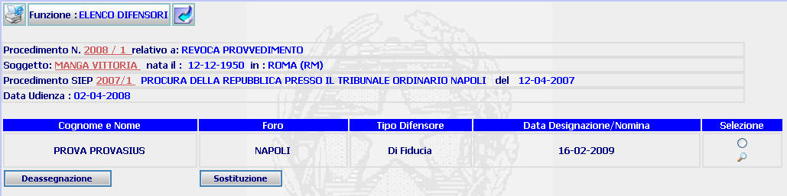
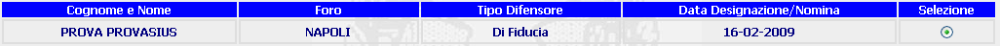

ELENCO DIFENSORI: La funzione consente di visualizzare l'elenco dei difensori assegnati al procedimento e di deassegnare o sostituire gli stessi.
LE MASCHERE VIDEO
La funzione viene realizzata attraverso la maschera seguente

COME FARE PER ...
| Per visualizzare il dettaglio del procedimento Sius l'utente deve cliccare sul link relativo all'Anno/Numero del procedimento Sius evidenziato in rosso; |

| Per visualizzare il dettaglio del soggetto l'utente deve cliccare sul link relativo al cognome/nome del soggetto evidenziato in rosso; |

| Per visualizzare il dettaglio del procedimento Siep l'utente deve cliccare sul link relativo all' Anno/Numero del procedimento Siep evidenziato in rosso; |

| Per eliminare l'assegnazione di un difensore precedentemente assegnato al procedimento corrente, l'utente deve: |
Selezionare il difensore da deassegnare cliccando sull'apposito radio button

Cliccare sul bottone
|
Per sostituire un difensore precedentemente assegnato con altro difensore, l'utente deve |
Selezionare il difensore da sostituire cliccando sull'apposito radio button
Selezionare il bottone ed operare sulla maschera di sostituzione difensore
| Per visualizzare il
dettaglio difensore l'utente deve selezionare il pulsante
|
PULSANTI
Oltre ai pulsanti
 e
e
 , facenti entrambi parte del gruppo di
pulsanti di "Uso Comune
è presente il seguente pulsante:
, facenti entrambi parte del gruppo di
pulsanti di "Uso Comune
è presente il seguente pulsante:
|
PULSANTE |
DESCRIZIONE |
|
|
Questo pulsante ha lo scopo di visualizzare il dettaglio difensore |